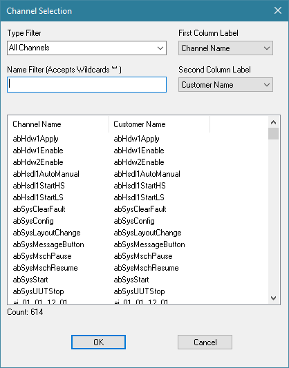

iTest User's Guide
The Channel Selection Dialog is a common dialog window used for displaying, sorting, filtering, and selecting iTest channels throughout iTest. The Channel Select dialog's functionality and appearance may be modified due to the specific nature of the tool or editor that opened it.
Default Channel Selection Dialog

Channels can be selected singularly or multiple channels can be selected by using Ctrl + Left-click or Shift + Left-click. The latter is supported by some list or spreadsheet-based editors.
Channel Selection Dialog Descriptions
| Column | Description |
| Type Filter | List of available filters including channel type and module. |
| Name Filter | Filters the list of iTest channels to just those channels that contain the filter string. This field supports the following conditions: - To filter using a replacement symbol for one or more characters, use * anywhere in the name to represent or replace a series of characters. - To filter for the beginning of a channel name, use ^ as a prefix before the name. - To filter for the end of a channel name, use $ as a suffix after the name. |
| First Column Label | Click the drop-down menu to set the first column label to one of the following: Channel Name, Customer Name, Module Name. |
| Second Column Label | Click the drop-down menu to set the second column to one of the following: Channel Name, Customer Name, Module Name, Alias, Description. |
To sort channels by label, click on the first or second column header.
For more information on our standalone version of this dialog, refer to the ChannelSelect.exe documentation.